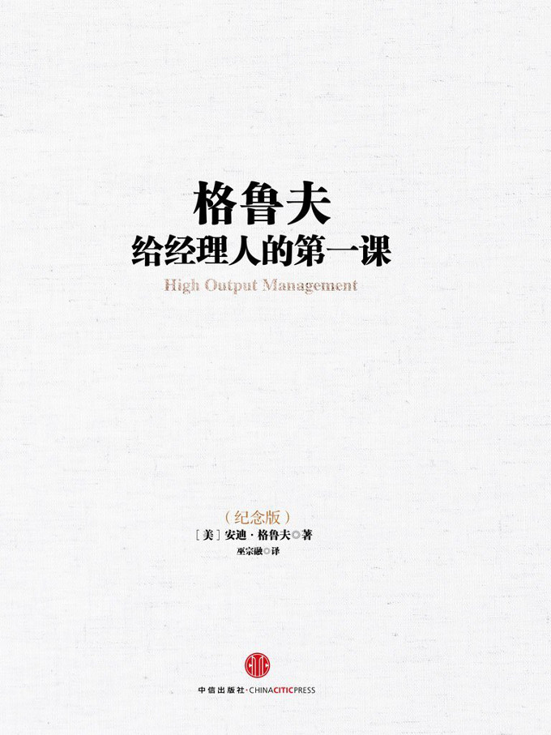

注：【】部分为笔者心得，非原文摘抄。
- 全球化和信息革命对每个人的生涯规划都有致命的影响，没人欠你一个饭碗，你必须自己当家。
- 三项基本的生产步骤：
- 制造；
- 组装；
- 测试。
- 凡是能以最低成本达到理想的运送速度以及品质的，便是最佳方案。
- 只要有可能，应该使用线上检视的方法，而避免必须要牺牲产品的测试方法。
- 【尽早发现并解决问题，尤其要避免错误链的形成和发展。】
- 指标能将你的注意力引导到需要监督的事情上。
- 一个有效的指标应是评估产出，而不是产出之前的生产活动。此外，一个好的指标应该是用来衡量具体且可计算的事情的。
- 设了指标之后，员工的斗志也容易被激发出来，从而提升工作绩效。
- 【可以感谢运气，但不能太相信它。】
- 对未来作预测，然后调整管理工作，是一个提高产能的重要方法。
- 帕金森定律：员工永远会将交差的时间拖到最后一秒。
- 设定标准，预测每个员工的工作量，这绝对有助于提升并维持产能。
- 如果想以最低成本得到可接受的品质，你必须在产品尚未消耗太多成本之前便淘汰掉瑕疵品。
- 如果我们无法评估瑕疵品会造成什么损害，就不该以客户对我们的信赖为赌注。
- 随机检验应用在管理上，既可以增加员工的责任感，又可以节省时间，对提高管理的产能大有助益。
- 要将工作简单化，你得先质疑每一个步骤存在的理由。
- 经理人的产出＝他直接管辖部门的产出＋他间接影响所及部门的产出
- 经理人必须有同时处理数件事情的能耐，此外，还得知道何时该转移注意力，把精力放在当时最能促进整个组织产出的活动上。
- 对大多数的经理人而言，最重要的信息往往来自于简短而非正式的谈话。
- 信息的价值，通常和其时效有绝对的关联。
- 有一个极有效的收集信息的方法经常被经理人忽略——不时地在公司中走动走动。
- 对公司来说，一个大家都认同的企业文化绝对有其必要性。一个明智的企业员工的做事方式自会保持与企业文化的一致；如果大家都认同公司的企业文化，经理人常常能省下制定繁文缛节的时间和精力。
- 你对一件事情了解的程度将会影响你的决策，这便是为什么收集信息对一个经理人如此重要。
- 成就领导风格最好的方法就是“做”，还要做得“让人看的到”！
- 如何运用时间甚至是一个人是否能成为领导者或模范的最重要的一点。
- 会议为经理人提供了从事其管理活动的场合，但会议本身并非“活动”，它只是“媒介”。
- 经理人的生产力及其每个单位时间的产出，可通过以下 3 种方法来增加：
- 加快每一项活动进行的速度；
- 提高每一项活动的杠杆率；
- 即各单项管理活动所带来的产出；
- 调整管理活动的组合，摒除低杠杆率的活动，代之以高杠杆率的活动。
- 要达成高杠杆率，大致上有以下 3 种情况：
- 当一个经理人可以同时影响很多人时；
- 当一个经理人一个简单的动作或一段简短的话，可以对别人产生长远的影响时；
- 当一个经理人所提供的技术、知识或信息，会对一群人的工作造成影响时。
- 为了提高管理活动的杠杆率，你一定得把“时效”的重要性铭记在心。
- 如果会议的关键人物没做准备就到达会场，这场会议不仅浪费其他与会人的时间（直接成本），而且还会剥夺在这段时间他们可以做其他事情的机会（间接成本）。
- 经理人每次传授有效知识、技能或其价值观给下属，都会是高杠杆率活动，尤其当这些人再将他们所学到的传授给其他人时。
- 拖延决策经常等于作了一个错误的决策。
- 上级干涉是一个常见的负杠杆率活动。这种情况通常是经理人利用他们的职权或经验，过度参与下属的工作，因此剥夺了下属实际执行的机会。
- 管理的艺术在于如何在那么多看来都很重要的活动中，挑出一两项甚至三项最重要的，然后全心全意地去做。
- 留心顾客的抱怨具有极高的杠杆率。
- “授权人”和“被授权人”的关系有一个必要条件：这两者必须有相同的信息基础，以及在开展工作和解决问题上有一套彼此认同的方法。如果你的被授权人猜不透是否自己已被授权或不明白被授权的范围，将会有极高的负杠杆率。
- 没有完备监督计划的授权等于渎职。授权者绝对不能完全地抽身，即使已经授权，授权者还是得负成败责任。
- 监督不是干涉，而是通过不时的检查，来确定活动的进行一如预期。
- 经理人应该不定期地深入了解细节，而且在次数上应该“不扰民”，以确保项目以合理速度进行为限。
- 如果能找出哪些事非做不可，再将其它活动绕着这些重要性高的事来规划，工作就会更有效率。
- 将类似的工作集中在一起做。
- 为了避免现实生活中管理工作的琐碎感觉，将你的计划按照你所能预测的部分来拟订是事半功倍的。
- 对于超过你工作负荷的事，你必须说“不”！因为如果你接下了一件事而到最后没法交差，其结果还是与一开始就说“不”一样，甚至更糟。
- 如果制造商能供应标准产品，你在管理工作上也可以针对经常碰到的问题准备好标准答案。
- 回答一个问题的快慢，取决于要花多少时间找到相关的信息。
- 中层经理人工作中很重要的一环是提供信息与技术，并且将理想的行事方法传授给受他管辖或影响的人。
- 会议室从事管理工作必经的媒介。
- 有效率的管理是根据下属对工作的熟悉度，而进行不同程度的掌控。另外一个你必须考虑的因素，则是在这项特定工作中事情变化的速度。
- 将一对一会议视为下属的会议，应该由他负责会议议程以及掌控会议的气氛。重要的是下属应负责提出潜在的问题。
- 上司应该是个协调者，让下属能畅言他的工作状况或有什么不顺的情形。上司的角色集学生和教练于一身。
- 部门会议最主要的目的在于自由讨论，如果经理人借此机会运用权势开始其“一言堂”，无异于违背了会议的基本精神。
- 经理人在会议中最主要的角色是协调者，负责控制会议的进度和化解纷争。
- 在英特尔，运营总结会议最主要的目的是，让因组织关系而没有机会开一对一或部门会议的人，也能有机会彼此学习及分享经验。这对新晋或是资深的经理人都有好处。
- 每个与会的人都有责任在提案人说错话或提供错误数据时更正他。
- 决策会议不容有人“隔山观虎斗”，这种旁观者只会阻碍决策进行。
- 如果经理人将超过 25%的时间用在应急的任务导向会议上，这个组织就一定有了毛病。
- 如果一个企业要靠掌握的知识赖以谋生及成长，那么“知识的力量”和“职位的力量”之间的分歧会越来越大。
- 理想决策过程的三个阶段：
- 自由讨论；
- 清楚地决策；
- 全力支持。
- 决策由离问题最近，而且最了解问题的人来制定。
- 在会议中必须排除等级观念，在自由讨论阶段，每个人的意见都应该有相同的分量。
- 当一群职位相当的人要开会时，总需要有一个职位较高的人与会——他不见得最能干或最具有专业知识，但他能够控制会议的进行。
- 如果在会场中发现“同级群体综合征”的迹象，但又苦于没有一位正式的主席时，谁跟会议的结果最有利害关系，谁就该站出来。如果这样还是找不到人，那么就找最资深的人当头，他知道决策应该如何制定，也因此给了与会者制定决策所需的信心。
- “怕人家觉得自己笨”是一种足以让不论是拥有专业知识还是位居高位的人都瘫痪的想法。
- 绝对不要让你的决策早产。一定要确定你已在讨论中收集到足够的相关信息，而非只是泛泛之言。
- 在制定决策之前，经理人应对以下 6 个问题的答案了然于胸：
- 决策的内容；
- 决策的时限；
- 决策人；
- 在制定决策前应先向谁咨询；
- 谁对此决策一言九鼎，或是能全盘否定；
- 谁应该在决策制定后被告知。
- 建立一套决策流程，其重要性远胜于加速决策流程。
- 集体决策通常不容易达成，因为集体讨论的过程实在太麻烦，因此主要决策者很容易就偏于独断。——阿尔弗雷德·斯隆
- 如果你能满足顾客目前的需求，便应该想些办法应对未来一年的需求差异。而你如何应对差异，事实上便是规划流程的主要结果。
- 规划的最后阶段，便是决定要采取哪些新的行动或是修正原有的做法，以缩小预测和现状间的差距。
- 当你将计划落实为白纸黑字时，看起来最抽象笼统的总结即为你的战略；而你用来实行战略的行动极为战术。
- 在你规划行动方案之前，一定记得问自己：有什么事情我如果“今天”做了，可以让“明天”更好，或者至少让“明天”不会更糟。
- 如果规划的人不是执行的人，结果通常很难令人满意。
- 规划通常具有极高的管理杠杆率。但这个高杠杆率唯有在“规划”和“执行”相得益彰的情况下才会产生。
- 时间和资源都有限，必须培养出何时说“是”和说“不”的判断力和胆识。
- 要做好目标管理，必须先回答一下两个问题：
- 我想去哪里？
- 我如何知道正朝着目标迈进？
- 反馈要在行动评估后即时产生才能达到最大效力。
- 目标管理的用意是让人能按进度行事。
- 好的经营管理，是在应对市场与发挥组织最大力量间求取最佳的组合。
- 一个公司无法借着组织条文让员工产生“信赖感”，而只能靠它的企业文化来建立信赖。
- 我们在工作上的行为，主要受着三项无形但极具效力的因素控制：
- 自由市场因素；（个人利益优先）
- 契约义务；
- 文化价值观。（集体利益优先）
- 激励要能产生效能，必须要发自当事人的内心。而经理人所能做的只是创造出适当的环境，让受到激励的人能好好表现。
- 激励是用来提高绩效的，而不是改变一个人的情绪或者态度。
- 【利用马斯洛需求层次对团队中不同级别的成员分别进行激励。】
- 一旦某个人受激励的来源是自我实现，他工作的动力将不再受局限。这是自我实现有别于其它激励模式最重要的特点。
- 当需求层次较低时，金钱就十分重要。
- 一般而言，在较高的需求层次时，恐惧通常源自内在而非外在的威胁。
- 将办公室化为竞技场能让下属有运动员的精神：求胜但不怕输，并随时向自己的极限挑战——这是一个团队能不断前进的主要动力。
- 没有任何一种管理风格能放诸四海而皆准。
- 随着工作成熟度的改变，管理风格必须随之改变。明确地说，当工作成熟度低时，最有效的管理方法是提供明确且详细的指示；随着下属的工作成熟度渐增，最有效的领导方式也由组织化转为沟通、情绪上的支持与鼓励；在更成熟的阶段，经理人对下属的干涉也应该进一步降低，主要管理目标应聚焦在确定下属的努力方向是否合乎部门的需求上。然而，不管工作成熟度落在哪一个阶段，经理人都应当随时且适度地检视下属的工作，以避免任何突发状况。
- 在思考管理风格以及真正执行时，不要让“扮白脸”或“扮红脸”成为影响决策的因素。千万记得：我们真正在意的是效率。
- 绩效评估大致可以分成两部分：评估下属的绩效，以及将评估的结果告诉下属。
- 评估一个经理人时，应该评估他个人的绩效，还将他所负责管理的下属的绩效也包含在内。
- 必须不断提醒自己，要评估的是绩效而非下属的潜力。
- 要评估的是真正的表现而非表面现象，是实质的产出而非形式。
- 没有其它事比提拔某个人更能传达这个人对组织的价值信息。让最好的下属升职的同时也是在向其他下属传达绩效的重要性。
- 表现不佳的员工常常会忽视他自己的问题。因此，身为上司的你必须找到证据来证明你不是信口开河。
- 让下属从忽视问题的存在转变为担负责任是经理人的职责，但双方应该一起寻求解决问题的方法。
- 绩效评估最主要的目的在于提高受评估人的绩效。
- 主管必须保持其判断的完整性。为保证评估过程的完整，主观无论如何都得自己作下属的评估。
- 不要担心问题太单刀直入——这样的问题才容易得到直接的答案。就算不行，你也经常能通过应聘者回答时的措辞或肢体语言等，有更深一层的了解。
- 从长远来看，如果每个主管都能抛开本位主义尽力留住人才，大家都会有好处。
- 有些时候一个人可能被提升到超出他能力太多的职位上，因此有很长的时间他都达不到及格线。如果这种情况发生，解决方法是将他“再回收”：把他放回到之前表现优异的工作上。
- 【考虑用见习的方式进行跨专业提拔，尤其是从非管理阶层提拔到管理阶层时。】
- 经理人必须负责绩效评估与“论功行赏”，并且要做到公平、公正、公开。如果真能做到，对整个组织绩效的提升将大有助益。